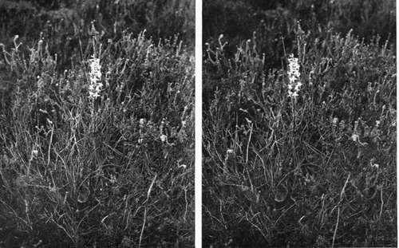
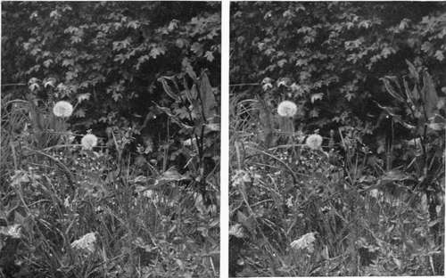
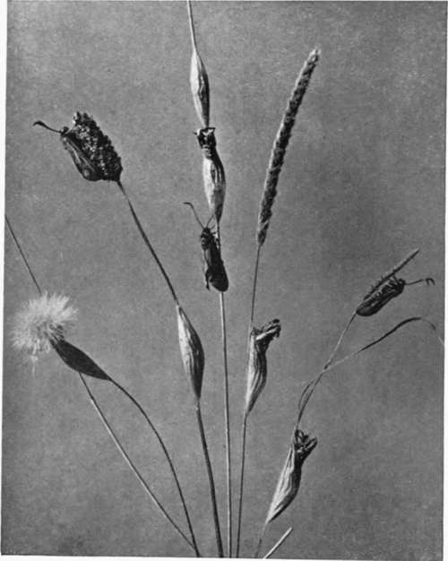
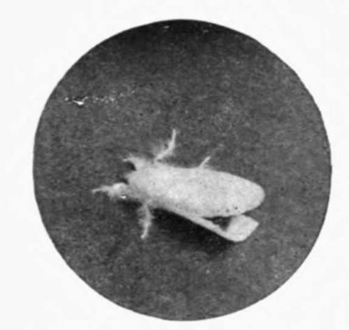
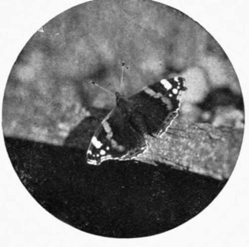
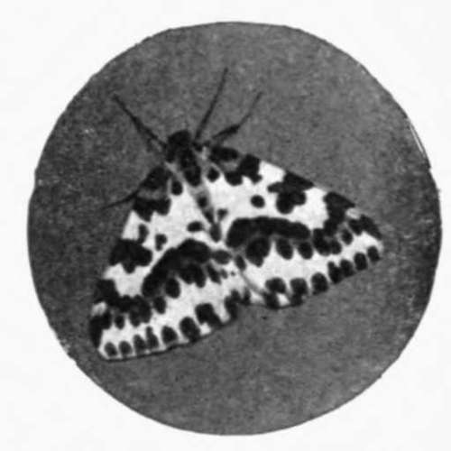

The First Three Weeks In The Life Of A Cuckoo. Continued
Description
This section is from the book "Nature Photography For Beginners", by E. J. Bedford. Also available from Amazon: Nature Photography for Beginners.
The First Three Weeks In The Life Of A Cuckoo. Continued
The well-known cry of two notes is uttered both by the male and female bird in flight, as well as from a perch, and during the early part of the season may be heard at all hours of the day and night. There are numerous popular rhymes relating to the bird; one is as follows:—
In March he leaves his perch. In April come he will. In May he sings all day,
In June he changes his tune, In July he's ready to fly.
Come August, go he must,
In September, you'll him remember,
But October, he'll never get over.
Fig. 81. Butterfly Orchis.
Fig. 82. Dandelions.
First Weeks Of A Cuckoo's Life
There are many passages in Shakespeare, Milton, and other great poets, referring to the bird, and there belongs to the last century an " Ode to the Cuckoo," of disputed authorship,1 one of the most beautiful pieces in our language.
The Cuckoo makes no nest of its own, but places its egg in the nest of some other bird, leaving the foster-parent to hatch it. The egg is laid upon the ground, and is carried by the bird in its bill and placed in the nest chosen. i have found nests containing Cuckoo's eggs where it would have been quite impossible for the egg to have been laid in the nest in the usual manner. The size of the egg is remarkably small for the bird, and the nests chosen by the Cuckoo to receive it vary remarkably, as many as one hundred and twenty different species having been given. The list is too long to quote here, but i might mention, amongst the more curious, the Missel Thrush, Song Thrush, Blackbird, Starling, Jay, Magpie, Jackdaw, Green Woodpecker, Ring Dove, Stock Dove, Turtle Dove, and Little Grebe. The nests generally chosen are those of the Meadow Pipit, Hedge Sparrow, Pied Wagtail, Robin, and Reed Warbler.
The colour variations of the egg can only be described as extraordinary; in many cases the likeness to the eggs in the nest in which it is placed is so perfect that it might be taken for a slightly larger egg of the foster-parent. British specimens are usually of one of two fairly distinct types, that is to say, the markings are either greyish or brownish. On the continent blue eggs are found, and in the wonderful series of eggs exhibited at the Natural History Museum, South Kensington, where they are shown with the clutches of the foster-parents in the nests, there are three examples of blue eggs, laid in the nests of the Hedge Sparrow, Redstart, and Pied Flycatcher, which also lay blue eggs.
1 Cf. Brit. Quart. Rev. lxi. pp. 500-513.
Borrer, in his work already referred to, says: " I took one at Cowfold, from a Hedge Sparrow's nest, which was as large as that of the Alpine Accentor, and of the same colour as that of the Hedge Sparrow, of which I at first thought it was a double-yolked specimen, which it was not, and several naturalists agree with me that it is that of a Cuckoo." It is thought by some that the blue stage is in process of formation in this country, and that the grey type, usually found in the nest of the Hedge Sparrow, will be developed in course of time into the blue variety.
Many other interesting points must be passed over for want of space. We are indebted to the celebrated Dr. Jenner for the discovery of how the young Cuckoo turned out the young birds or eggs belonging to the nest in which it was hatched. This was related by him in a letter to John Hunter, who communicated the facts to the Royal Society. (Phil. Trans. 1788, pp. 219-237.) Jenner's account was doubted by some of his contemporaries, but has now been fully confirmed, and photographs have been published showing the act in operation.
It was on the 18th of June 1787 that Dr. Jenner examined a Hedge Sparrow's nest, which then contained a Cuckoo's egg, and three eggs of its owner. Inspecting it the next day he found therein a young Cuckoo and a young Hedge Sparrow; and as it was so placed that he could distinctly observe what went on in it, he, to his astonishment, saw the former, though so lately hatched, in the act of turning out its companion: " The mode of accomplishing this was very curious: the little animal, with the assistance of its rump and wings, contrived to get the bird upon its back, and, making a lodgment for the burden by elevating its elbows, clambered backwards with it up the side of the nest till it reached the top, where, resting for a moment, it threw off its load with a jerk, and quite disengaged it from the nest. It remained in this situation a short time, feeling about with the extremities of its wings, as if to be convinced whether the business was properly executed, and then dropped into the nest again. With these (the extremities of its wings) I have often seen it examine, as it were, an egg and nestling before it began its operations; and the nice sensibility which those parts appeared to possess seemed sufficiently to compensate the want of sight, which as yet it was destitute of. I afterwards put in an egg, and this, by a similar process, was conveyed to the edge of the nest and thrown out.
" The singularity of its shape is well adapted for these purposes; for, different from other newly hatched birds, its back, from the scapulae downwards, is very broad, with a considerable depression in the middle. This depression seems formed by nature for the design of giving a more secure lodgment to the egg of the Hedge Sparrow, or its young one, when the young Cuckoo is employed in removing either of them from the nest. When it is about twelve days old, this cavity is quite filled up, and the back assumes the shape of nestling birds in general".
The adult Cuckoos usually leave this country before the end of July, but the young birds of the year, notwithstanding the fact that they have never crossed the water, do not leave until quite a month later, and then undertake their long journey all alone.
Gilbert White, in The Natural History of Selborne, says:
" A countryman told me he had found a young Fern-Owl in the nest of a small bird on the ground, and that it was fed by the little bird. I went to see this extraordinary phenomenon, and found that it was a young Cuckoo, hatched in the nest of a Titlark; it was become vastly too big for its nest, appearing ... in tenui re Majores pennas nido extendisse,1 and was very fierce and pugnacious, pursuing my finger, as I teased it, for many feet from the nest, sparring and buffeting with its wings like a game-cock. The dupe of a dam appeared at a distance, hovering about with meat in her mouth and expressing the greatest solicitude".
Here we must leave the subject, but the reader who is interested will find much further information concerning the Cuckoo in Yarr ell's British Birds, from the pages of which I have extracted some of these notes.
1 To have stretched its wings beyond the little nest.
Fig. 85. Burnet Moths and Cocoons.
Fig. 86a. Brown-tail Moth.
Fig. 86b. Red Admiral Butterfly.
Fig. 35c. Magpie Moth.
Continue to:
- prev: Chapter XIII. The First Three Weeks In The Life Of A Cuckoo
- Table of Contents
- next: Chapter XIV. Nightingale Lane
Tags
nature, photography, art, birds, camera